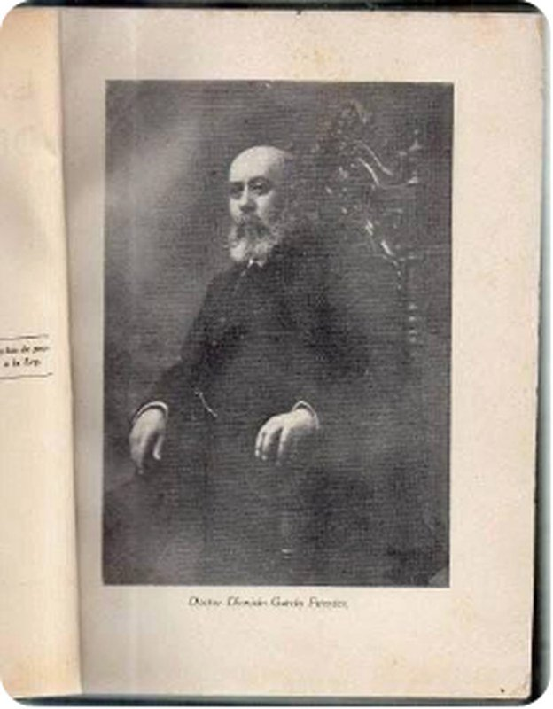

Casa García Carrillo × Fuentes del Valle · Saltillo
Dr. Dionisio García Fuentes

Médico, educador y filósofo positivista · Saltillo, Coahuila · 1855 – 1938
Médico cirujano, presidente municipal de Saltillo (1887) y dos veces director del Ateneo Fuente. Conocido en Coahuila como el «Padre del Positivismo»; autor de «La integridad de la conciencia».
Dionisio García Fuentes nació en Saltillo, Coahuila, el 9 de noviembre de 1855* y murió en la misma ciudad el 7 de febrero de 1938. Médico de formación y maestro por vocación, fue una de las inteligencias más influyentes de la vida educativa coahuilense entre los siglos XIX y XX.
Vida
Se tituló de médico cirujano en la Ciudad de México en mayo de 1877. De regreso en su ciudad natal combinó el ejercicio de la medicina con la cátedra y el servicio público: en 1887 fue presidente municipal de Saltillo. En 1905 aspiró a la gubernatura de Coahuila con el respaldo de los clubes democráticos «Benito Juárez», promovidos por Francisco I. Madero.
Obra y cargos
- 1877 · Médico cirujano titulado en la Ciudad de México.
- 1887 · Presidente municipal de Saltillo.
- 1893–1895 · Director del Ateneo Fuente; bajo su dirección se inauguró la biblioteca del plantel el 16 de septiembre de 1894, hoy biblioteca «José García Rodríguez».
- 1909–1913 · Director del Ateneo Fuente por segunda ocasión; participó en la reforma de su plan de estudios.
- Puebla · Director de la Escuela Normal y presidente del Consejo de Salubridad del estado.
- 1918–1920 · Vocal del Consejo Superior de Salubridad y vicepresidente del Departamento de Higiene Escolar del Distrito Federal.
- 1921–1923 · Catedrático de Biología en la Escuela Nacional Preparatoria; decano de la Facultad de Medicina.

Legado
Difusor en Coahuila de la filosofía positivista de Comte y Gabino Barreda, es recordado como el «Padre del Positivismo» en el estado. Su ensayo La integridad de la conciencia sintetiza ese pensamiento. Descansa en el Panteón de Santiago de Saltillo, donde su tumba ostenta un busto de mármol con una sola palabra por epitafio: «Positivismo». Una escuela primaria de Saltillo lleva su nombre.
* Algunas fuentes educativas de Coahuila registran el nacimiento en 1854. Retrato de época con leyenda impresa «Doctor Dionisio García Fuentes» (fuente secundaria de aniversario de muerte, 1938). Se agrupa en la familia García Garza por su apellido García; su filiación directa con Lorenzo García y Juana de la Garza está en investigación.
Fuentes
- La Otra Plana — «Lo que no debemos olvidar: Dionisio García Fuentes»
- El Mañana — columna «Positivismo» (busto y epitafio en el Panteón de Santiago)
- Vanguardia — El hombre que dejó su vida en el Ateneo Fuente de Saltillo
- SEDU Coahuila — Breves de la historia de la educación en Coahuila (marzo 2014)
Ficha de enlaces del archivo
Saltillo, 1854–1938. Médico cirujano, título de 1877. Hijo de Dionisio García Carrillo y Luisa Fuentes del Valle. Sobrino de Antonio García Carrillo.
Presidente municipal de Saltillo en 1887. Director del Ateneo Fuente en más de un periodo; vicedirector hacia 1900. Donó su sueldo para libros: la biblioteca del Ateneo llegó a 653 volúmenes. El paraninfo del Ateneo lleva su nombre desde el 30 de octubre de 1942. Director de la Escuela Normal Superior de Puebla. Catedrático de la Facultad Nacional de Medicina. Vocal del Consejo Superior de Salubridad. En 1905 aspiró a la gubernatura de Coahuila.
Casó con Josefina Zertuche. Hija: María Josefa García Zertuche. Hermanos: Jesús, José María, Mercedes, Manuel y María Guadalupe García Fuentes. En Saltillo hay escuela primaria Dr. Dionisio García Fuentes.
De la misma línea que Antonio García Carrillo. Línea de los García del Huachichil.
Esta biografía también está publicada, con sus fuentes, en genealogiasefardi.site. Información avalada por Sefarad MX y genealogiasefardi.site.